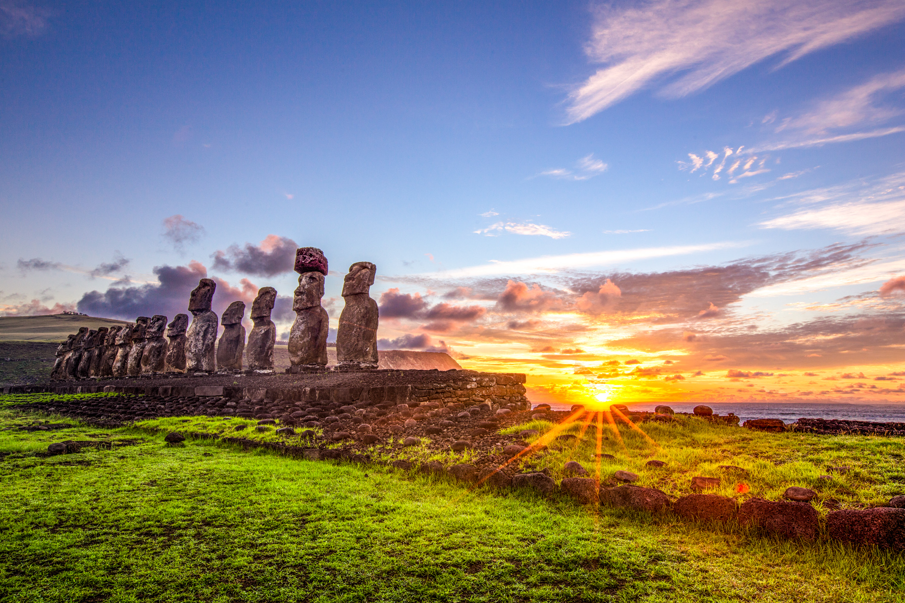
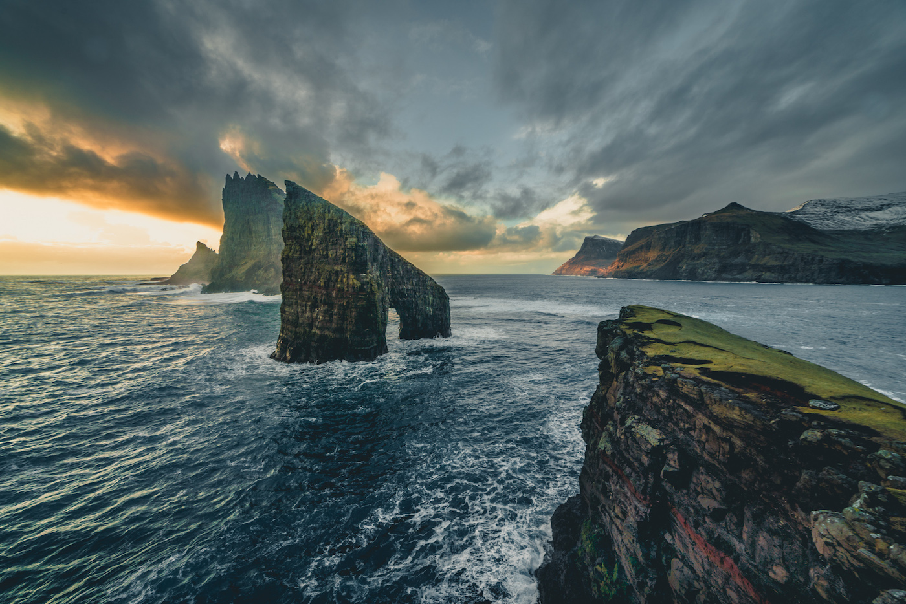
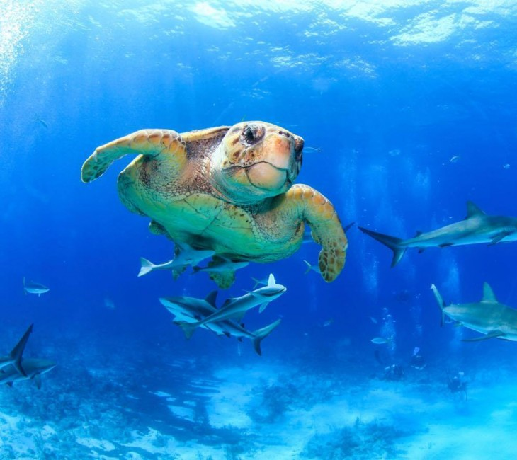
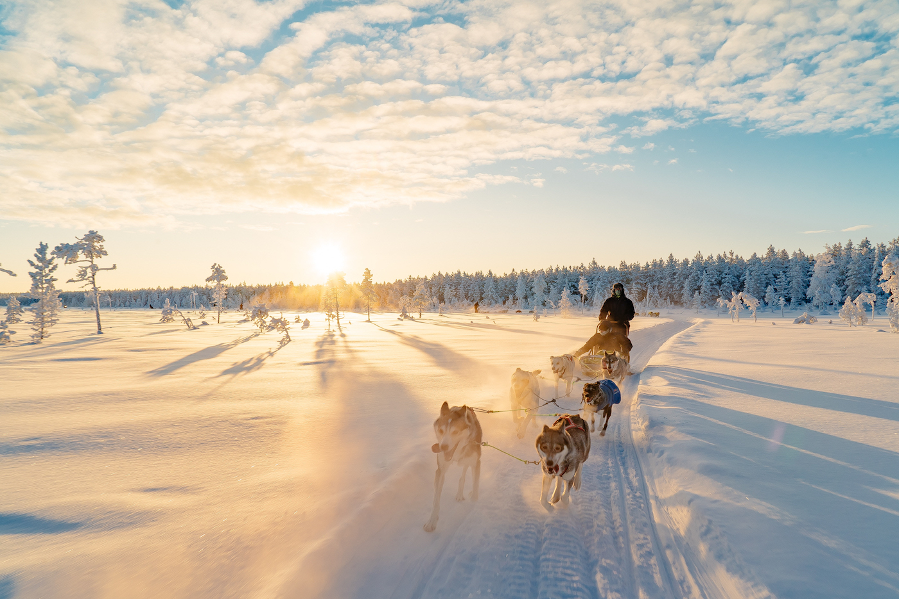

Chili

Chili (Engels / Spaans: Chile) is een land in Zuid-Amerika dat grenst aan Peru, Bolivia en Argentinië. Andere gebieden die ook onder Chili vallen zijn: De Juan Fernández-archipel, de Desventuradaseilanden, Isla Navarino, Paaseiland, het westelijke deel van Vuurland (Tierra del Fuego) en een stukje van Antarctica. Het oostelijke deel van Vuurland maakt deel uit van Argentinië. De hoofdstad van Chili is Santiago. Een aantal grote steden in Chili zijn: Puente Alto, Africa en Antofagasta...
Japan

Metropolitische steden, tempels, verse sushi en vele contrasten. Laat u tijdens een rondreis Japan verwarmen door het ‘land van de rijzende zon’. In de hypermoderne hoofdstad Tokyo dwaalt u te midden van bloeiende kersenbloesem naar de oude Senso-ji tempel. Of verwonder u in Kyoto bij Fushimi inari-taisha waar de heilige torri’s u leiden naar schitterende tempels. In de straatjes van Gion kunt u zomaar een charmante geisha tegen het lijf lopen...
Faeroër eilanden

De Faeröer is een eilandengroep, en ligt in de noordelijke Atlantische Oceaan in de driehoek Schotland-Noorwegen-IJsland. De naam Faeröer betekent waarschijnlijk Schapeneilanden. Er wonen 50.730 (2017) mensen, van wie een kleine 40 procent in de hoofdstad Tórshavn...
Bahamas

De Bahama’s (Engels: The Bahamas) is een land en tevens eilandengebied in het Caribische gebied (Noord-Amerika) dat sinds 1973 onafhankelijk is van het Verenigd Koninkrijk. De Bahama’s bestaat uit 700 volwaardige eilanden en nog eens circa 2.500 mini eilandjes. Van al deze eilanden zijn er ongeveer 30 tot 40 bewoond. Het grootste eiland is Andros. Een aantal kleinere eilanden zijn: de Bimini-eilanden, Grand Bahama, Great Abaco, Great Inagua, Eleuthera, Cat, San Salvador, Acklins, Crooked en Mayaguana. De hoofdstad van de Bahama’s is Nassau. Een aantal grote steden op de Bahama’s zijn: Freeport, West End, Coopers Town en Marsh Harbour...
Lapland

Lapland (Samisch: Sápmi) is een geografisch gebied in Europa dat verspreid ligt over het noordelijke gedeelte van vier landen (Noorwegen, Zweden, Finland en Rusland). Een aantal grote steden in Lapland zijn: Hammerfest, Kiruna, Tromsø, Moermansk en Rovaniemi...